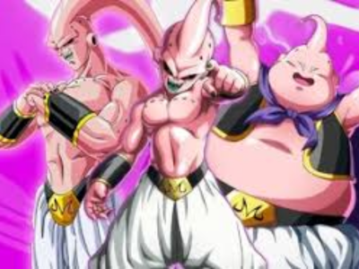

Majin Buu
Majin Buu é um dos antagonistas principais da franquia Dragon Ball, criada por Akira Toriyama. Ele é uma entidade mágica e uma das ameaças mais poderosas enfrentadas pelos Guerreiros Z ao longo da série. Majin Buu é originalmente introduzido como uma criação do mago maligno Bibidi, que o utiliza como arma para semear destruição e caos. Buu é retratado como uma criatura rosa e gorda, com uma personalidade infantil e imprevisível. Ele é capaz de se regenerar rapidamente de qualquer ferimento e possui uma série de habilidades mágicas, incluindo a capacidade de transformar pessoas em doces e absorvê-las para aumentar seu próprio poder.